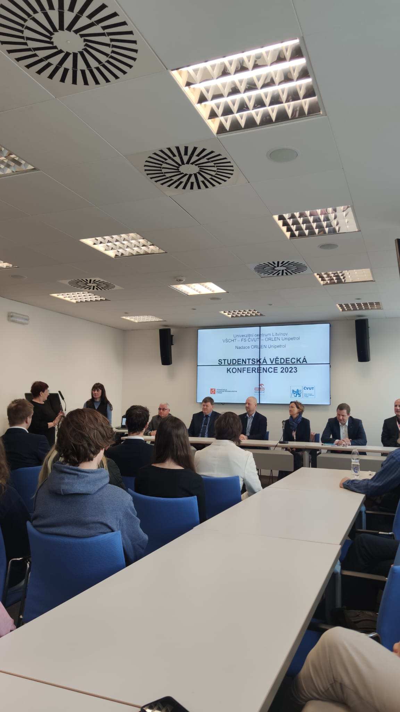

O NÁS
Jsme skupina šesti studentů, kteří se zabývají 3D tiskem a napadlo
nás, že to co umíme by mohlo přinést užitek i ostatním lidem. Už od 15
let většina z nás pracuje s 3D tiskárnami a některé naše vytištěné
součástky nachází velice zajímavá uplatnění, například v prototypu
přenosné vodní elektrárny, nebo v elektrolyzéru.

Momentálě se všichni věnujeme 3D tisku naplno a každý den tiskneme
nějaké součástky. Naším hlavním cílem je ukázat široké veřejnost že ve
3D tisku je budoucnost a že každý s touto technologií může pracovat.
Naše projekty
Vodní elektrárna
tento projekt využíval řemenice které byli vytištěné z polymeru PET G,
který vydržel pracovat na elektrárně celá léta.


s tímto projektem se nám dokonce podařilo vyhrát v roce 2023
Studentskou vědeckou konferenci

Elektrolyzér
Projekt elektrolyzér využíval speciálně upravená víka vytištěna na 3D
tiskárně z polymeru PET G, která byla resistentní vůči velice
alkalickému prostředí(až PH14).